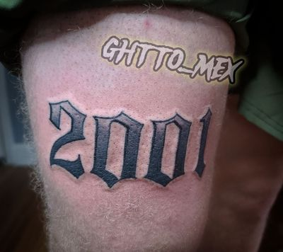

The question I get every spring is when to get a tattoo before vacation, and the answer is the same for a trip, a wedding or a graduation. Start from the date you want to be showing the piece and count backward. That is the whole method. Most people count forward from today, which is how somebody ends up asking for a half sleeve four weeks before a wedding.
Here are the lead times I plan around in Chicago Ridge, and the months that tend to be open.
Count backward from the event, not forward from today
Three dates matter, and most people bring me only one. There is the event date, the date the last session has to be done, and the date you put a deposit down.
The gap between the last two is what people skip. Say a wedding is June 14 and you want a forearm piece finished for it. The job is not "book something in June." The job is: last session in mid May, first session in April, which means you are calling me in March.
So give me the event date up front. I will do that math with you before you pay anything, and if it does not work I will say so instead of taking a deposit and hoping.
How far ahead to book, by size
Small pieces need weeks. Large pieces need months. This is what it looks like in practice at my shop.
| Piece | Time in the chair | Book this far ahead |
|---|---|---|
| A date, a name, a palm-size piece of script | 1 to 2 hours | 2 to 3 weeks |
| One forearm piece or a single portrait | 4 to 6 hours, one or two sittings | 4 to 6 weeks |
| Half sleeve | 3 to 4 sittings | 3 to 4 months |
| Full sleeve | 5 to 7 sittings | 6 to 9 months |
| Back piece or full chest | 8 or more sittings | 9 to 12 months |
| Cover-up, any size | Consult before anything gets booked | Add 4 weeks, or several months if I want it faded first |
Those count back from the day you need the last session done, and on multi-session work they include the sittings, not just the wait to get onto my calendar. A back piece is a year of your life, on and off, and it should be treated that way from the first call.

Multi-session work gets its dates locked as a block
If a piece takes more than two sittings, we book every session at once, on the day the deposit is paid. I do not book session one and figure out the rest later.
The reason is arithmetic. I space sessions three to four weeks apart, so a full sleeve at six sessions is fifteen to twenty weeks from the first sitting to the last, before you add the wait to start. Book them one at a time and every next date gets whatever is left after the people who planned. A five month sleeve quietly becomes a ten month sleeve.
Booked as a block you can usually keep the same weekday and start time each round, and you get the session count before you commit instead of three sittings in.

Planning a sleeve around a wedding or a vacation
For a hard date, I want the last session finished with weeks to spare, not the week of. Build a buffer into the plan and treat it as part of the schedule, not as slack you can spend.
Two weeks of buffer on a single-session piece. Four to six weeks on anything multi-session. That covers what actually happens: you get sent out of state for work, I lose a day, a session runs long and we need one more date to finish it right.
Send the placement in that first message too. Placement drives the session count and the session count drives how early you start, so a wrist piece and a rib piece the same size are not the same booking. If you are still deciding, go through the gallery and come to me with a direction. A week matters when you are counting backward.
Which months fill and which months are quiet
January through early March is usually the quietest stretch of my year. May and June are the hardest months to get into, and it is not close.
Graduations stack up through May. Weddings run May into October, vacation season takes June through August, and pool season pulls a wave of bookings right before it starts. December fills early with holiday work, then the calendar goes flat in January.
If your date is flexible, book in winter. More choice of days, longer sittings, a real shot at the exact dates you want on a big piece. If you want a sleeve of black and grey Chicano realism ready for next summer, call in the fall so the sittings start in the quiet months. Not May.
Booking around your training week
Look at your week, find the day you already do the least, and put the appointment there. My hours are noon to 7pm, Monday through Saturday, and I am closed Sunday.
Six hours is the longest I book in one day, and a sitting that size takes the afternoon and the evening with it. If you train early, a noon start costs you nothing. If you train after work, that sitting and your workout want the same block of the day, so move the appointment to another weekday instead of cramming both in and showing up late to mine.
If you are training toward a date of your own, say so when you book. I would rather place the sessions around your calendar at the start than move five appointments in April.
Cover-ups need extra runway
A cover-up does not book on the same timeline as fresh work. Add a consult first, and if I ask for laser fading, add months to the calendar rather than weeks.
So send a clear daylight photo of what is already there in your first message. I will tell you whether it can be covered at the size you want and whether I want it faded, and that answer is often the difference between making your date and missing it. I explain when I ask for fading, and why, in the post on laser fading before a cover-up.
The deposit is what holds the date, not the conversation
Until a deposit is paid, your date is open to whoever books it next. A text thread does not hold a day on my calendar, and people lose June Saturdays over three days of thinking it over.
The shop rate is $150 an hour for large and ongoing work, small pieces are quoted flat, and the deposit comes off the total, never on top of it. Give me reasonable notice and it moves with you. No-show and it stays, because the drawing was already done. Detail is on the pricing and deposits page and in how to book a tattoo with me.
What to send me when you book
- The event date and what it is. Wedding, graduation, trip, reunion.
- Placement and a rough size in inches.
- Reference images, including anything you saved from the gallery.
- If it is a cover-up, a clear daylight photo of the existing piece.
- Your real availability. The weekdays you can genuinely sit for six hours, not the ones you wish you could.
Text or call (708) 770-2754, or start on the booking page. If your date is too tight for what you are asking for, I will tell you in the first message rather than the fourth. Quality takes time, and the calendar is part of the time.
Quick answers
How far ahead should I book a tattoo before a vacation or a wedding?
A palm-size piece of script needs 2 to 3 weeks and a single forearm piece needs 4 to 6 weeks. A half sleeve needs 3 to 4 months and a full sleeve needs 6 to 9 months. Add two weeks of buffer on a one-session piece and four to six weeks on anything multi-session.
Can a full sleeve be finished in time for my wedding?
It depends how far out the wedding is. I space sessions three to four weeks apart, so six sessions is fifteen to twenty weeks from the first sitting to the last, before you count the wait to start, which means calling six to nine months ahead. If the date is closer than that, I will tell you rather than take a deposit and rush the work.
Which months are quietest at your shop?
January through early March is usually the quietest stretch of my year. May and June are the hardest months to get into because graduations, weddings and vacation season all stack up there, so if your date is flexible, book in winter.
Do you book all the sessions at once for multi-session work?
Yes. Anything over two sittings gets every date set on the day the deposit is paid. Booking one session at a time puts you behind the people who planned, and a five month sleeve turns into a ten month sleeve.
Does a cover-up take longer to schedule?
It needs more runway than fresh work. There is a consult before anything gets booked, and if I ask for laser fading first, that adds months to the calendar rather than weeks. Send a clear daylight photo of the existing piece in your first message so I can tell you early.